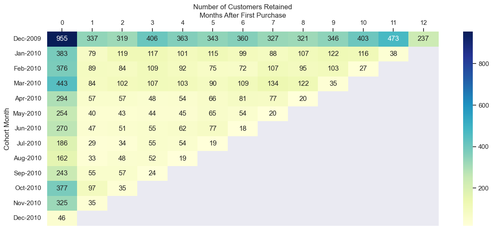
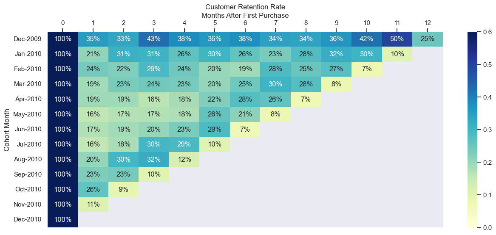
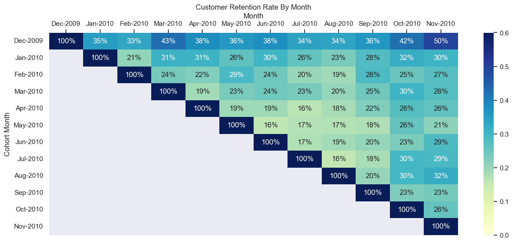
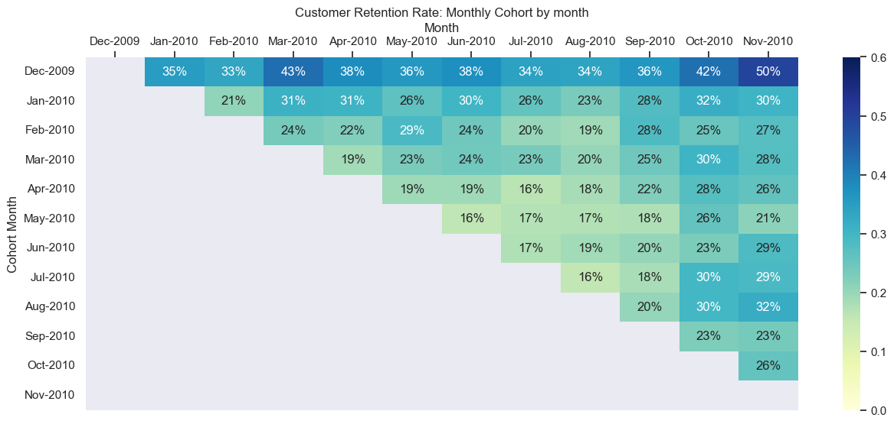
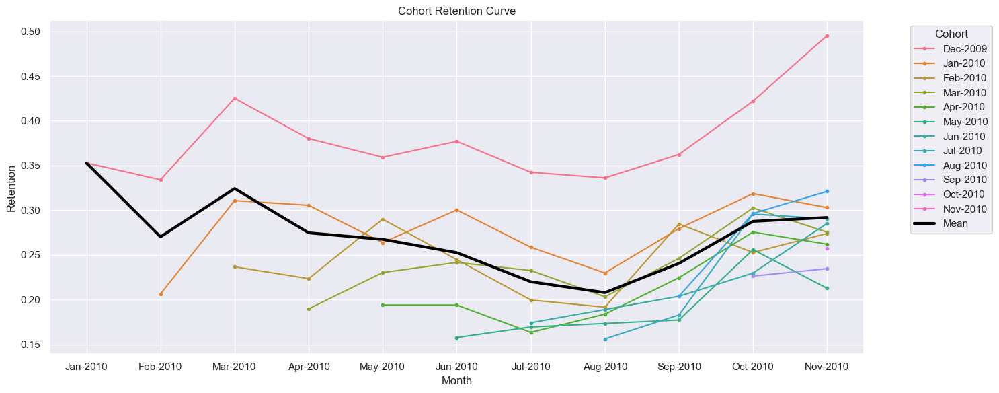

# Standard Data Package
import pandas as pd
import numpy as np
import matplotlib.pyplot as plt
import seaborn as sns
# Datetime Package
from datetime import datetime
# Serialization Package
import joblibCustomer Retention Cohort Analysis
Data Analytics
Analyzing Customer Cohorts to Improve Retention & Value
Project Overview
This project analyzes customer behavior using cohort analysis, focusing on acquisition patterns, retention trends, and cumulative customer value over time. The goal is to understand how different cohorts perform and derive actionable business insights to improve acquisition quality, retention strategy, and customer lifetime value.
This project answers key business questions such as:
Which period brought the highest number of newly acquired customers?
Are there specific months where customer acquisition significantly declined?
How does customer retention trend over time across cohorts?
Which cohorts contributed the highest customer value?
Are there cohorts that consistently bring lower value customers?
Does the quality of acquired customers remain consistent across months?
Is there alignment between acquisition volume and customer value/retention?
Github Repositories: Link
Dataset: Online Retail II
Reference: wunderdata - cohort analysis
Methodology
Cohort Definition: Customers are grouped based on the month of their first transaction.
Retention Measurement: Retention is calculated as the percentage of customers from each cohort who remain active in subsequent periods.
Activity Definition: A customer is considered active if they record at least one transaction in the given period.
Cumulative Sales Analysis: Computed average cumulative sales per customer for each cohort to evaluate long-term customer value and spending patterns.
Visualization Techniques: Insights presented using heatmaps, line charts, and cohort tables for retention and revenue behavior.
Key Insights
- Dec-2009 acquired the largest number of customers.
- There is a significant drop in customer acquisition from April to September.
- Retention improves noticeably in September–November 2010.
- Retention declines during June–August, indicating seasonal or engagement issues.
- High-value customers were acquired in Dec-2009 and Sep-2010.
- Customers acquired between April and August generate lower value than other cohorts.
Business Implications
| Insight | Recommended Action |
|---|---|
| December 2009 acquired the highest number of customers | Replicate the acquisition strategies used during this period. |
| Significant drop in customer acquisition Apr–Sep | Investigate marketing activity and strengthen acquisition campaigns. |
| Retention increases in Sep–Nov 2010 | Apply the successful retention tactics more consistently. |
| Retention declines in Jun–Aug | Launch re-engagement initiatives and analyze seasonal/operational drivers. |
| High-value customers acquired in Dec 2009 & Sep 2010 | Scale the channels that brought these valuable segments. |
| Low-value customers acquired Apr–Aug | Improve onboarding, upselling, and cross-selling for these cohorts. |
Tools & Libraries
Python: pandas, numpy, matplotlib, seaborn
Jupyter Notebook / Quarto for analysis and reporting
Project Structure
├── data/
│ └──
├── notebooks/
│ └── cohort_analysis.ipynb
│ └──
├── reports/
│ └── cohort_analysis.qmd
├── src/
│ └── data_processing.py
│ └── cohort_functions.py
└── README.mdFull Code & Details
This project consist of 2 Notebooks:
- Data Cleaning & EDA Notebook
Here I perform some basic EDA and do a little cleaning. - Cohort Analysis Notebook
Here is where I do the actual analysis for the dataset.
Data Cleaning & EDA Notebook
Cohort Analysis Notebook
# Standard Data Package
import pandas as pd
import numpy as np
import matplotlib.pyplot as plt
import seaborn as sns
sns.set_theme()
# Datetime Package
from datetime import datetime
# Serialization Package
import joblibdata = joblib.load("../data/processed/cleaned_data.pkl")# Data Preview
data.head()| Invoice | StockCode | Description | Quantity | InvoiceDate | Price | Customer ID | Country | Total_Price | |
|---|---|---|---|---|---|---|---|---|---|
| 0 | 489434 | 85048 | 15CM CHRISTMAS GLASS BALL 20 LIGHTS | 12 | 2009-12-01 07:45:00 | 6.95 | 13085 | United Kingdom | 83.4 |
| 1 | 489434 | 79323P | PINK CHERRY LIGHTS | 12 | 2009-12-01 07:45:00 | 6.75 | 13085 | United Kingdom | 81.0 |
| 2 | 489434 | 79323W | WHITE CHERRY LIGHTS | 12 | 2009-12-01 07:45:00 | 6.75 | 13085 | United Kingdom | 81.0 |
| 3 | 489434 | 22041 | RECORD FRAME 7" SINGLE SIZE | 48 | 2009-12-01 07:45:00 | 2.10 | 13085 | United Kingdom | 100.8 |
| 4 | 489434 | 21232 | STRAWBERRY CERAMIC TRINKET BOX | 24 | 2009-12-01 07:45:00 | 1.25 | 13085 | United Kingdom | 30.0 |
- We can create monthly cohort by using each customer first ever transaction from the
InvoiceDate. - Before that, we can separate the month and year information from
InvoiceDateto make it easier to create cohort columns and group each transaction by months.
# Extracting Month from InvoiceDate
data['Month'] = data['InvoiceDate'].apply(lambda x: datetime(x.year, x.month, 1))
# Validation
data.head()| Invoice | StockCode | Description | Quantity | InvoiceDate | Price | Customer ID | Country | Total_Price | Month | CohortMonth | CohortIndex | |
|---|---|---|---|---|---|---|---|---|---|---|---|---|
| 0 | 489434 | 85048 | 15CM CHRISTMAS GLASS BALL 20 LIGHTS | 12 | 2009-12-01 07:45:00 | 6.95 | 13085 | United Kingdom | 83.4 | 2009-12-01 | 2009-12-01 | 0 |
| 1 | 489434 | 79323P | PINK CHERRY LIGHTS | 12 | 2009-12-01 07:45:00 | 6.75 | 13085 | United Kingdom | 81.0 | 2009-12-01 | 2009-12-01 | 0 |
| 2 | 489434 | 79323W | WHITE CHERRY LIGHTS | 12 | 2009-12-01 07:45:00 | 6.75 | 13085 | United Kingdom | 81.0 | 2009-12-01 | 2009-12-01 | 0 |
| 3 | 489434 | 22041 | RECORD FRAME 7" SINGLE SIZE | 48 | 2009-12-01 07:45:00 | 2.10 | 13085 | United Kingdom | 100.8 | 2009-12-01 | 2009-12-01 | 0 |
| 4 | 489434 | 21232 | STRAWBERRY CERAMIC TRINKET BOX | 24 | 2009-12-01 07:45:00 | 1.25 | 13085 | United Kingdom | 30.0 | 2009-12-01 | 2009-12-01 | 0 |
- Now let’s find each customer first transaction to group them by cohorts.
# Create and Extract each customer Cohortmonth
data['CohortMonth'] = data.groupby(by='Customer ID')['Month'].transform('min')
# Validation
data.head()| Invoice | StockCode | Description | Quantity | InvoiceDate | Price | Customer ID | Country | Total_Price | Month | CohortMonth | CohortIndex | |
|---|---|---|---|---|---|---|---|---|---|---|---|---|
| 0 | 489434 | 85048 | 15CM CHRISTMAS GLASS BALL 20 LIGHTS | 12 | 2009-12-01 07:45:00 | 6.95 | 13085 | United Kingdom | 83.4 | 2009-12-01 | 2009-12-01 | 0 |
| 1 | 489434 | 79323P | PINK CHERRY LIGHTS | 12 | 2009-12-01 07:45:00 | 6.75 | 13085 | United Kingdom | 81.0 | 2009-12-01 | 2009-12-01 | 0 |
| 2 | 489434 | 79323W | WHITE CHERRY LIGHTS | 12 | 2009-12-01 07:45:00 | 6.75 | 13085 | United Kingdom | 81.0 | 2009-12-01 | 2009-12-01 | 0 |
| 3 | 489434 | 22041 | RECORD FRAME 7" SINGLE SIZE | 48 | 2009-12-01 07:45:00 | 2.10 | 13085 | United Kingdom | 100.8 | 2009-12-01 | 2009-12-01 | 0 |
| 4 | 489434 | 21232 | STRAWBERRY CERAMIC TRINKET BOX | 24 | 2009-12-01 07:45:00 | 1.25 | 13085 | United Kingdom | 30.0 | 2009-12-01 | 2009-12-01 | 0 |
Now that we have this, we can create an index to calculate how many months have passed since the customer’s first transaction for each transaction made by the customer .
# Creating Cohort Index for each transaction
def calculate_cohortindex(data_cohort):
"Calculate month difference from first transaction to the current transaction"
cohort_month = data_cohort['CohortMonth'].dt.month
cohort_year = data_cohort['CohortMonth'].dt.year
tn_month = data_cohort['Month'].dt.month
tn_year = data_cohort['Month'].dt.year
monthdiff = tn_month-cohort_month
yeardiff = tn_year - cohort_year
index = yeardiff*12 + monthdiff
return indexdata['CohortIndex']= calculate_cohortindex(data)
# Validation
data.head()| Invoice | StockCode | Description | Quantity | InvoiceDate | Price | Customer ID | Country | Total_Price | Month | CohortMonth | CohortIndex | |
|---|---|---|---|---|---|---|---|---|---|---|---|---|
| 0 | 489434 | 85048 | 15CM CHRISTMAS GLASS BALL 20 LIGHTS | 12 | 2009-12-01 07:45:00 | 6.95 | 13085 | United Kingdom | 83.4 | 2009-12-01 | 2009-12-01 | 0 |
| 1 | 489434 | 79323P | PINK CHERRY LIGHTS | 12 | 2009-12-01 07:45:00 | 6.75 | 13085 | United Kingdom | 81.0 | 2009-12-01 | 2009-12-01 | 0 |
| 2 | 489434 | 79323W | WHITE CHERRY LIGHTS | 12 | 2009-12-01 07:45:00 | 6.75 | 13085 | United Kingdom | 81.0 | 2009-12-01 | 2009-12-01 | 0 |
| 3 | 489434 | 22041 | RECORD FRAME 7" SINGLE SIZE | 48 | 2009-12-01 07:45:00 | 2.10 | 13085 | United Kingdom | 100.8 | 2009-12-01 | 2009-12-01 | 0 |
| 4 | 489434 | 21232 | STRAWBERRY CERAMIC TRINKET BOX | 24 | 2009-12-01 07:45:00 | 1.25 | 13085 | United Kingdom | 30.0 | 2009-12-01 | 2009-12-01 | 0 |
Number of Customers Retained
Now let’s see how many customers make transactions each month from each cohort.
cohort_data = data.groupby(['CohortMonth','CohortIndex'])['Customer ID'].agg("nunique").reset_index(name = "NumCustomer")
# Validation
cohort_data.head(12)| CohortMonth | CohortIndex | NumCustomer | |
|---|---|---|---|
| 0 | 2009-12-01 | 0 | 955 |
| 1 | 2009-12-01 | 1 | 337 |
| 2 | 2009-12-01 | 2 | 319 |
| 3 | 2009-12-01 | 3 | 406 |
| 4 | 2009-12-01 | 4 | 363 |
| 5 | 2009-12-01 | 5 | 343 |
| 6 | 2009-12-01 | 6 | 360 |
| 7 | 2009-12-01 | 7 | 327 |
| 8 | 2009-12-01 | 8 | 321 |
| 9 | 2009-12-01 | 9 | 346 |
| 10 | 2009-12-01 | 10 | 403 |
| 11 | 2009-12-01 | 11 | 473 |
We can use pivot table and apply heatmap to visualize the data better.
cohort_pivot = cohort_data.pivot_table(
index="CohortMonth",
columns="CohortIndex",
values="NumCustomer"
)
cohort_pivot.index = cohort_pivot.index.strftime('%b-%Y')
# Validation
cohort_pivot| CohortIndex | 0 | 1 | 2 | 3 | 4 | 5 | 6 | 7 | 8 | 9 | 10 | 11 | 12 |
|---|---|---|---|---|---|---|---|---|---|---|---|---|---|
| CohortMonth | |||||||||||||
| Dec-2009 | 955.0 | 337.0 | 319.0 | 406.0 | 363.0 | 343.0 | 360.0 | 327.0 | 321.0 | 346.0 | 403.0 | 473.0 | 237.0 |
| Jan-2010 | 383.0 | 79.0 | 119.0 | 117.0 | 101.0 | 115.0 | 99.0 | 88.0 | 107.0 | 122.0 | 116.0 | 38.0 | NaN |
| Feb-2010 | 376.0 | 89.0 | 84.0 | 109.0 | 92.0 | 75.0 | 72.0 | 107.0 | 95.0 | 103.0 | 27.0 | NaN | NaN |
| Mar-2010 | 443.0 | 84.0 | 102.0 | 107.0 | 103.0 | 90.0 | 109.0 | 134.0 | 122.0 | 35.0 | NaN | NaN | NaN |
| Apr-2010 | 294.0 | 57.0 | 57.0 | 48.0 | 54.0 | 66.0 | 81.0 | 77.0 | 20.0 | NaN | NaN | NaN | NaN |
| May-2010 | 254.0 | 40.0 | 43.0 | 44.0 | 45.0 | 65.0 | 54.0 | 20.0 | NaN | NaN | NaN | NaN | NaN |
| Jun-2010 | 270.0 | 47.0 | 51.0 | 55.0 | 62.0 | 77.0 | 18.0 | NaN | NaN | NaN | NaN | NaN | NaN |
| Jul-2010 | 186.0 | 29.0 | 34.0 | 55.0 | 54.0 | 19.0 | NaN | NaN | NaN | NaN | NaN | NaN | NaN |
| Aug-2010 | 162.0 | 33.0 | 48.0 | 52.0 | 19.0 | NaN | NaN | NaN | NaN | NaN | NaN | NaN | NaN |
| Sep-2010 | 243.0 | 55.0 | 57.0 | 24.0 | NaN | NaN | NaN | NaN | NaN | NaN | NaN | NaN | NaN |
| Oct-2010 | 377.0 | 97.0 | 35.0 | NaN | NaN | NaN | NaN | NaN | NaN | NaN | NaN | NaN | NaN |
| Nov-2010 | 325.0 | 35.0 | NaN | NaN | NaN | NaN | NaN | NaN | NaN | NaN | NaN | NaN | NaN |
| Dec-2010 | 46.0 | NaN | NaN | NaN | NaN | NaN | NaN | NaN | NaN | NaN | NaN | NaN | NaN |
plt.figure(figsize=(15,6))
plt.title("Number of Customers Retained")
sns.heatmap(cohort_pivot, annot=True, fmt = ".0f", cmap="YlGnBu")
plt.ylabel('Cohort Month')
plt.xlabel('Months After First Purchase')
plt.grid(False)
# Move the x axis to the top
ax = plt.gca()
ax.xaxis.tick_top()
ax.xaxis.set_label_position('top')
plt.show()
- We can see that Dec-2009 acquired the most number of customers.
- From April to September, there is a big drop in the number of customers acquired.
- Since the data only contains transaction from 1st December 2009 to 9th December 2010, the low retained and acquired customer was due to incomplete data.
Customer Retention Rates
- Now we can normalize the data so we can see the retention rates clearly regardless of the number of customers in each cohort.
retention = cohort_pivot.divide(cohort_pivot[0], axis=0)
retention| CohortIndex | 0 | 1 | 2 | 3 | 4 | 5 | 6 | 7 | 8 | 9 | 10 | 11 | 12 |
|---|---|---|---|---|---|---|---|---|---|---|---|---|---|
| CohortMonth | |||||||||||||
| Dec-2009 | 1.0 | 0.352880 | 0.334031 | 0.425131 | 0.380105 | 0.359162 | 0.376963 | 0.342408 | 0.336126 | 0.362304 | 0.421990 | 0.495288 | 0.248168 |
| Jan-2010 | 1.0 | 0.206266 | 0.310705 | 0.305483 | 0.263708 | 0.300261 | 0.258486 | 0.229765 | 0.279373 | 0.318538 | 0.302872 | 0.099217 | NaN |
| Feb-2010 | 1.0 | 0.236702 | 0.223404 | 0.289894 | 0.244681 | 0.199468 | 0.191489 | 0.284574 | 0.252660 | 0.273936 | 0.071809 | NaN | NaN |
| Mar-2010 | 1.0 | 0.189616 | 0.230248 | 0.241535 | 0.232506 | 0.203160 | 0.246050 | 0.302483 | 0.275395 | 0.079007 | NaN | NaN | NaN |
| Apr-2010 | 1.0 | 0.193878 | 0.193878 | 0.163265 | 0.183673 | 0.224490 | 0.275510 | 0.261905 | 0.068027 | NaN | NaN | NaN | NaN |
| May-2010 | 1.0 | 0.157480 | 0.169291 | 0.173228 | 0.177165 | 0.255906 | 0.212598 | 0.078740 | NaN | NaN | NaN | NaN | NaN |
| Jun-2010 | 1.0 | 0.174074 | 0.188889 | 0.203704 | 0.229630 | 0.285185 | 0.066667 | NaN | NaN | NaN | NaN | NaN | NaN |
| Jul-2010 | 1.0 | 0.155914 | 0.182796 | 0.295699 | 0.290323 | 0.102151 | NaN | NaN | NaN | NaN | NaN | NaN | NaN |
| Aug-2010 | 1.0 | 0.203704 | 0.296296 | 0.320988 | 0.117284 | NaN | NaN | NaN | NaN | NaN | NaN | NaN | NaN |
| Sep-2010 | 1.0 | 0.226337 | 0.234568 | 0.098765 | NaN | NaN | NaN | NaN | NaN | NaN | NaN | NaN | NaN |
| Oct-2010 | 1.0 | 0.257294 | 0.092838 | NaN | NaN | NaN | NaN | NaN | NaN | NaN | NaN | NaN | NaN |
| Nov-2010 | 1.0 | 0.107692 | NaN | NaN | NaN | NaN | NaN | NaN | NaN | NaN | NaN | NaN | NaN |
| Dec-2010 | 1.0 | NaN | NaN | NaN | NaN | NaN | NaN | NaN | NaN | NaN | NaN | NaN | NaN |
plt.figure(figsize=(15,6))
plt.title("Customer Retention Rate")
sns.heatmap(retention, annot=True, fmt=".0%", cmap="YlGnBu", vmin = 0.0 , vmax = 0.6)
plt.ylabel('Cohort Month')
plt.xlabel('Months After First Purchase')
plt.grid(False)
# Move the x axis to the top
ax = plt.gca()
ax.xaxis.tick_top()
ax.xaxis.set_label_position('top')
plt.show()
- Let’s exclude the Dec-2010 transaction data.
# Create an df full of trues
mask = pd.DataFrame(True, index=retention.index, columns=retention.columns)
n = len(retention)
# Mark the anti-diagonal as false
for i in range(n):
mask.iloc[i, n - 1 - i] = False
mask| CohortIndex | 0 | 1 | 2 | 3 | 4 | 5 | 6 | 7 | 8 | 9 | 10 | 11 | 12 |
|---|---|---|---|---|---|---|---|---|---|---|---|---|---|
| CohortMonth | |||||||||||||
| Dec-2009 | True | True | True | True | True | True | True | True | True | True | True | True | False |
| Jan-2010 | True | True | True | True | True | True | True | True | True | True | True | False | True |
| Feb-2010 | True | True | True | True | True | True | True | True | True | True | False | True | True |
| Mar-2010 | True | True | True | True | True | True | True | True | True | False | True | True | True |
| Apr-2010 | True | True | True | True | True | True | True | True | False | True | True | True | True |
| May-2010 | True | True | True | True | True | True | True | False | True | True | True | True | True |
| Jun-2010 | True | True | True | True | True | True | False | True | True | True | True | True | True |
| Jul-2010 | True | True | True | True | True | False | True | True | True | True | True | True | True |
| Aug-2010 | True | True | True | True | False | True | True | True | True | True | True | True | True |
| Sep-2010 | True | True | True | False | True | True | True | True | True | True | True | True | True |
| Oct-2010 | True | True | False | True | True | True | True | True | True | True | True | True | True |
| Nov-2010 | True | False | True | True | True | True | True | True | True | True | True | True | True |
| Dec-2010 | False | True | True | True | True | True | True | True | True | True | True | True | True |
retention_masked = retention[mask].copy()
plt.figure(figsize=(12,6))
plt.title("Customer Retention Rate")
sns.heatmap(retention_masked, annot=True, fmt=".0%", cmap="YlGnBu", vmin = 0.0 , vmax = 0.6)
plt.ylabel('Cohort Month')
plt.xlabel('Month After First Purchase')
plt.grid(False)
# Move the x axis to the top
ax = plt.gca()
ax.xaxis.tick_top()
ax.xaxis.set_label_position('top')
plt.show()
- We can see that cohort Dec-2009 have a significantly higher retention rate. This may indicate that the marketing initiatives during that month were very successful and should potentially repeated.
- It appears that the retention rate for March to July cohort tends to decrease more significantly after the first month.
- Generally, retention rate decreases over time. However from our data we can see that there is an increase in the last 2-3 month on almost every cohort.
- I think we should visualize the retention by month to see the pattern more clearly.
cohort_data_month = data.groupby(['CohortMonth','Month'])['Customer ID'].agg("nunique").reset_index(name = "NumCustomer")
cohort_data_month| CohortMonth | Month | NumCustomer | |
|---|---|---|---|
| 0 | 2009-12-01 | 2009-12-01 | 955 |
| 1 | 2009-12-01 | 2010-01-01 | 337 |
| 2 | 2009-12-01 | 2010-02-01 | 319 |
| 3 | 2009-12-01 | 2010-03-01 | 406 |
| 4 | 2009-12-01 | 2010-04-01 | 363 |
| ... | ... | ... | ... |
| 86 | 2010-10-01 | 2010-11-01 | 97 |
| 87 | 2010-10-01 | 2010-12-01 | 35 |
| 88 | 2010-11-01 | 2010-11-01 | 325 |
| 89 | 2010-11-01 | 2010-12-01 | 35 |
| 90 | 2010-12-01 | 2010-12-01 | 46 |
91 rows × 3 columns
monthly_table = pd.pivot_table(cohort_data_month, values='NumCustomer', index='CohortMonth', columns='Month')
monthly_table.index = monthly_table.index.strftime('%b-%Y')
monthly_table| Month | 2009-12-01 | 2010-01-01 | 2010-02-01 | 2010-03-01 | 2010-04-01 | 2010-05-01 | 2010-06-01 | 2010-07-01 | 2010-08-01 | 2010-09-01 | 2010-10-01 | 2010-11-01 | 2010-12-01 |
|---|---|---|---|---|---|---|---|---|---|---|---|---|---|
| CohortMonth | |||||||||||||
| Dec-2009 | 955.0 | 337.0 | 319.0 | 406.0 | 363.0 | 343.0 | 360.0 | 327.0 | 321.0 | 346.0 | 403.0 | 473.0 | 237.0 |
| Jan-2010 | NaN | 383.0 | 79.0 | 119.0 | 117.0 | 101.0 | 115.0 | 99.0 | 88.0 | 107.0 | 122.0 | 116.0 | 38.0 |
| Feb-2010 | NaN | NaN | 376.0 | 89.0 | 84.0 | 109.0 | 92.0 | 75.0 | 72.0 | 107.0 | 95.0 | 103.0 | 27.0 |
| Mar-2010 | NaN | NaN | NaN | 443.0 | 84.0 | 102.0 | 107.0 | 103.0 | 90.0 | 109.0 | 134.0 | 122.0 | 35.0 |
| Apr-2010 | NaN | NaN | NaN | NaN | 294.0 | 57.0 | 57.0 | 48.0 | 54.0 | 66.0 | 81.0 | 77.0 | 20.0 |
| May-2010 | NaN | NaN | NaN | NaN | NaN | 254.0 | 40.0 | 43.0 | 44.0 | 45.0 | 65.0 | 54.0 | 20.0 |
| Jun-2010 | NaN | NaN | NaN | NaN | NaN | NaN | 270.0 | 47.0 | 51.0 | 55.0 | 62.0 | 77.0 | 18.0 |
| Jul-2010 | NaN | NaN | NaN | NaN | NaN | NaN | NaN | 186.0 | 29.0 | 34.0 | 55.0 | 54.0 | 19.0 |
| Aug-2010 | NaN | NaN | NaN | NaN | NaN | NaN | NaN | NaN | 162.0 | 33.0 | 48.0 | 52.0 | 19.0 |
| Sep-2010 | NaN | NaN | NaN | NaN | NaN | NaN | NaN | NaN | NaN | 243.0 | 55.0 | 57.0 | 24.0 |
| Oct-2010 | NaN | NaN | NaN | NaN | NaN | NaN | NaN | NaN | NaN | NaN | 377.0 | 97.0 | 35.0 |
| Nov-2010 | NaN | NaN | NaN | NaN | NaN | NaN | NaN | NaN | NaN | NaN | NaN | 325.0 | 35.0 |
| Dec-2010 | NaN | NaN | NaN | NaN | NaN | NaN | NaN | NaN | NaN | NaN | NaN | NaN | 46.0 |
retention_by_month = monthly_table.divide(cohort_pivot[0], axis=0)
retention_by_month.columns = retention_by_month.columns.strftime('%b-%Y')
# Drop Dec-2010 due to incomplete data
retention_by_month.drop(columns='Dec-2010', inplace=True)
retention_by_month.drop(index='Dec-2010', inplace=True)plt.figure(figsize=(15,6))
plt.title("Customer Retention Rate By Month")
sns.heatmap(retention_by_month, annot=True, fmt=".0%", cmap="YlGnBu", vmin = 0.0 , vmax = 0.6)
plt.ylabel('Cohort Month')
plt.xlabel('Month')
plt.grid(False)
# Move the x axis to the top
ax = plt.gca()
ax.xaxis.tick_top()
ax.xaxis.set_label_position('top')
plt.show()
- We can see that there is an increase at the end of the period and a decrease in the middle of the period, Let’s make a line plot from this table to see if it helps reveal the pattern.
- Let’s exclude each cohorts first month so as not to distort the line plot.
# mask the diagonal
mask_diag = pd.DataFrame(True, index=retention_by_month.index, columns=retention_by_month.columns )
for i in range(len(retention_by_month)):
mask_diag.iloc[i,i] = False
mask_diag| Month | Dec-2009 | Jan-2010 | Feb-2010 | Mar-2010 | Apr-2010 | May-2010 | Jun-2010 | Jul-2010 | Aug-2010 | Sep-2010 | Oct-2010 | Nov-2010 |
|---|---|---|---|---|---|---|---|---|---|---|---|---|
| CohortMonth | ||||||||||||
| Dec-2009 | False | True | True | True | True | True | True | True | True | True | True | True |
| Jan-2010 | True | False | True | True | True | True | True | True | True | True | True | True |
| Feb-2010 | True | True | False | True | True | True | True | True | True | True | True | True |
| Mar-2010 | True | True | True | False | True | True | True | True | True | True | True | True |
| Apr-2010 | True | True | True | True | False | True | True | True | True | True | True | True |
| May-2010 | True | True | True | True | True | False | True | True | True | True | True | True |
| Jun-2010 | True | True | True | True | True | True | False | True | True | True | True | True |
| Jul-2010 | True | True | True | True | True | True | True | False | True | True | True | True |
| Aug-2010 | True | True | True | True | True | True | True | True | False | True | True | True |
| Sep-2010 | True | True | True | True | True | True | True | True | True | False | True | True |
| Oct-2010 | True | True | True | True | True | True | True | True | True | True | False | True |
| Nov-2010 | True | True | True | True | True | True | True | True | True | True | True | False |
plt.figure(figsize=(15,6))
plt.title("Customer Retention Rate: Monthly Cohort by month")
sns.heatmap(retention_by_month[mask_diag], annot=True, fmt=".0%", cmap="YlGnBu", vmin = 0.0 , vmax = 0.6)
plt.ylabel('Cohort Month')
plt.xlabel('Month')
plt.grid(False)
# Move the x axis to the top
ax = plt.gca()
ax.xaxis.tick_top()
ax.xaxis.set_label_position('top')
plt.show()
Now we can create the line plot.
plt.figure(figsize=(15,6))
palette = sns.color_palette("husl", len(retention_by_month[mask_diag].index))
for i, cohort in enumerate(retention_by_month[mask_diag].index):
plt.plot(
retention_by_month[mask_diag].columns,
retention_by_month[mask_diag].loc[cohort],
marker=".",
color=palette[i],
label=str(cohort)
)
mean = retention_by_month[mask_diag].mean()
plt.plot(mean, color = 'black', linewidth=3, label = 'Mean')
plt.title("Cohort Retention Curve")
plt.xlabel("Month")
plt.ylabel("Retention")
plt.legend(title="Cohort", bbox_to_anchor=(1.05,1), loc='upper left')
plt.grid(True)
plt.tight_layout()
plt.show()
- Notice that there is a simultaneous increase in retention rate through September, October, and November 2010.
- We can also see declining retention rate on June to August.
- This simultaneous increase or decrease may be due to marketing strategies that are implemented during those months or seasonal effects that encourage many customers to return or churn.
- The marketing strategy must be adjusted from June to August so that the period can have better retention.
Average Cumulative Sales Per Customer by Cohort
Now let’s calculate the average cumulative sales per Cohort to see which cohort deliver more value over time than others.
# Calculate Sum of sales of each month by each cohort
cohort_sales = data.groupby(['CohortMonth','CohortIndex'])['Total_Price'].sum()
#Validation
cohort_sales.head()CohortMonth CohortIndex
2009-12-01 0 683504.010
1 394723.981
2 295931.572
3 378663.120
4 305901.290
Name: Total_Price, dtype: float64Now let’s pivot the data so we can see it more clearly.
# Pivot table
pivot = cohort_sales.unstack('CohortIndex')
pivot.index = pivot.index.strftime('%b-%Y')
pivot| CohortIndex | 0 | 1 | 2 | 3 | 4 | 5 | 6 | 7 | 8 | 9 | 10 | 11 | 12 |
|---|---|---|---|---|---|---|---|---|---|---|---|---|---|
| CohortMonth | |||||||||||||
| Dec-2009 | 683504.010 | 394723.981 | 295931.572 | 378663.120 | 305901.29 | 305066.66 | 301963.28 | 312812.830 | 331787.09 | 391539.48 | 460559.66 | 571512.942 | 184672.14 |
| Jan-2010 | 161078.691 | 38985.350 | 50955.470 | 57400.211 | 58528.89 | 60795.09 | 51990.10 | 48004.070 | 60459.54 | 74544.04 | 76602.00 | 21991.750 | NaN |
| Feb-2010 | 169642.034 | 33174.620 | 54677.760 | 53236.910 | 43906.71 | 39565.70 | 40078.67 | 51089.571 | 52810.88 | 54630.03 | 12022.37 | NaN | NaN |
| Mar-2010 | 234185.261 | 49737.450 | 51722.750 | 64507.630 | 50115.97 | 55850.23 | 65378.39 | 81126.030 | 76267.27 | 13995.03 | NaN | NaN | NaN |
| Apr-2010 | 124265.291 | 18871.040 | 20579.410 | 30099.750 | 22224.76 | 30769.05 | 35105.30 | 32670.450 | 4979.15 | NaN | NaN | NaN | NaN |
| May-2010 | 110407.130 | 13574.650 | 14065.400 | 12685.680 | 16861.31 | 31174.36 | 23140.53 | 4575.610 | NaN | NaN | NaN | NaN | NaN |
| Jun-2010 | 131044.360 | 16038.770 | 22546.500 | 25780.810 | 34934.40 | 48306.23 | 9299.55 | NaN | NaN | NaN | NaN | NaN | NaN |
| Jul-2010 | 75047.650 | 8384.300 | 13690.610 | 24927.850 | 28658.50 | 6791.62 | NaN | NaN | NaN | NaN | NaN | NaN | NaN |
| Aug-2010 | 60663.300 | 13797.990 | 23029.070 | 23403.830 | 8154.47 | NaN | NaN | NaN | NaN | NaN | NaN | NaN | NaN |
| Sep-2010 | 159647.200 | 29633.550 | 32174.950 | 9243.340 | NaN | NaN | NaN | NaN | NaN | NaN | NaN | NaN | NaN |
| Oct-2010 | 185266.870 | 46538.180 | 10172.250 | NaN | NaN | NaN | NaN | NaN | NaN | NaN | NaN | NaN | NaN |
| Nov-2010 | 152555.110 | 12049.900 | NaN | NaN | NaN | NaN | NaN | NaN | NaN | NaN | NaN | NaN | NaN |
| Dec-2010 | 12709.190 | NaN | NaN | NaN | NaN | NaN | NaN | NaN | NaN | NaN | NaN | NaN | NaN |
Now add up the sales each month to make it cumulative.
cumulative = pivot.cumsum(axis=1)
#validation
cumulative| CohortIndex | 0 | 1 | 2 | 3 | 4 | 5 | 6 | 7 | 8 | 9 | 10 | 11 | 12 |
|---|---|---|---|---|---|---|---|---|---|---|---|---|---|
| CohortMonth | |||||||||||||
| Dec-2009 | 683504.010 | 1078227.991 | 1374159.563 | 1752822.683 | 2058723.973 | 2363790.633 | 2665753.913 | 2978566.743 | 3310353.833 | 3701893.313 | 4162452.973 | 4733965.915 | 4918638.055 |
| Jan-2010 | 161078.691 | 200064.041 | 251019.511 | 308419.722 | 366948.612 | 427743.702 | 479733.802 | 527737.872 | 588197.412 | 662741.452 | 739343.452 | 761335.202 | NaN |
| Feb-2010 | 169642.034 | 202816.654 | 257494.414 | 310731.324 | 354638.034 | 394203.734 | 434282.404 | 485371.975 | 538182.855 | 592812.885 | 604835.255 | NaN | NaN |
| Mar-2010 | 234185.261 | 283922.711 | 335645.461 | 400153.091 | 450269.061 | 506119.291 | 571497.681 | 652623.711 | 728890.981 | 742886.011 | NaN | NaN | NaN |
| Apr-2010 | 124265.291 | 143136.331 | 163715.741 | 193815.491 | 216040.251 | 246809.301 | 281914.601 | 314585.051 | 319564.201 | NaN | NaN | NaN | NaN |
| May-2010 | 110407.130 | 123981.780 | 138047.180 | 150732.860 | 167594.170 | 198768.530 | 221909.060 | 226484.670 | NaN | NaN | NaN | NaN | NaN |
| Jun-2010 | 131044.360 | 147083.130 | 169629.630 | 195410.440 | 230344.840 | 278651.070 | 287950.620 | NaN | NaN | NaN | NaN | NaN | NaN |
| Jul-2010 | 75047.650 | 83431.950 | 97122.560 | 122050.410 | 150708.910 | 157500.530 | NaN | NaN | NaN | NaN | NaN | NaN | NaN |
| Aug-2010 | 60663.300 | 74461.290 | 97490.360 | 120894.190 | 129048.660 | NaN | NaN | NaN | NaN | NaN | NaN | NaN | NaN |
| Sep-2010 | 159647.200 | 189280.750 | 221455.700 | 230699.040 | NaN | NaN | NaN | NaN | NaN | NaN | NaN | NaN | NaN |
| Oct-2010 | 185266.870 | 231805.050 | 241977.300 | NaN | NaN | NaN | NaN | NaN | NaN | NaN | NaN | NaN | NaN |
| Nov-2010 | 152555.110 | 164605.010 | NaN | NaN | NaN | NaN | NaN | NaN | NaN | NaN | NaN | NaN | NaN |
| Dec-2010 | 12709.190 | NaN | NaN | NaN | NaN | NaN | NaN | NaN | NaN | NaN | NaN | NaN | NaN |
Then, devide each row to it’s corresponding cohort size.
avg_cum_sales = cumulative.divide(cohort_pivot[0], axis=0)
avg_cum_sales| CohortIndex | 0 | 1 | 2 | 3 | 4 | 5 | 6 | 7 | 8 | 9 | 10 | 11 | 12 |
|---|---|---|---|---|---|---|---|---|---|---|---|---|---|
| CohortMonth | |||||||||||||
| Dec-2009 | 715.711005 | 1129.034546 | 1438.910537 | 1835.416422 | 2155.731909 | 2475.173438 | 2791.365354 | 3118.918055 | 3466.339092 | 3876.328076 | 4358.589501 | 4957.032372 | 5150.40634 |
| Jan-2010 | 420.570995 | 522.360420 | 655.403423 | 805.273426 | 958.090371 | 1116.824287 | 1252.568674 | 1377.905671 | 1535.763478 | 1730.395436 | 1930.400658 | 1987.820371 | NaN |
| Feb-2010 | 451.175622 | 539.405995 | 684.825569 | 826.413096 | 943.186261 | 1048.414186 | 1155.006394 | 1290.882912 | 1431.337380 | 1576.630013 | 1608.604402 | NaN | NaN |
| Mar-2010 | 528.634901 | 640.909054 | 757.664698 | 903.280115 | 1016.408716 | 1142.481470 | 1290.062485 | 1473.191221 | 1645.352102 | 1676.943591 | NaN | NaN | NaN |
| Apr-2010 | 422.671058 | 486.858269 | 556.856262 | 659.236364 | 734.830786 | 839.487418 | 958.893201 | 1070.017180 | 1086.953065 | NaN | NaN | NaN | NaN |
| May-2010 | 434.673740 | 488.117244 | 543.492835 | 593.436457 | 659.819567 | 782.553268 | 873.657717 | 891.671929 | NaN | NaN | NaN | NaN | NaN |
| Jun-2010 | 485.349481 | 544.752333 | 628.257889 | 723.742370 | 853.129037 | 1032.041000 | 1066.483778 | NaN | NaN | NaN | NaN | NaN | NaN |
| Jul-2010 | 403.481989 | 448.558871 | 522.164301 | 656.185000 | 810.262957 | 846.777043 | NaN | NaN | NaN | NaN | NaN | NaN | NaN |
| Aug-2010 | 374.464815 | 459.637593 | 601.792346 | 746.260432 | 796.596667 | NaN | NaN | NaN | NaN | NaN | NaN | NaN | NaN |
| Sep-2010 | 656.984362 | 778.933128 | 911.340329 | 949.378765 | NaN | NaN | NaN | NaN | NaN | NaN | NaN | NaN | NaN |
| Oct-2010 | 491.424058 | 614.867507 | 641.849602 | NaN | NaN | NaN | NaN | NaN | NaN | NaN | NaN | NaN | NaN |
| Nov-2010 | 469.400338 | 506.476954 | NaN | NaN | NaN | NaN | NaN | NaN | NaN | NaN | NaN | NaN | NaN |
| Dec-2010 | 276.286739 | NaN | NaN | NaN | NaN | NaN | NaN | NaN | NaN | NaN | NaN | NaN | NaN |
Now we can visualize it on the heatmap.
# in thousands
pivot_display = avg_cum_sales / 1000
plt.figure(figsize=(15,6))
plt.title("Average Cumulative Sales Per User By Cohort (in thousands)")
sns.heatmap(pivot_display, annot=True, cmap="YlGnBu", vmax=1.6)
plt.ylabel('Cohort Month')
plt.xlabel('Months After First Transaction')
# Move the x axis to the top
ax = plt.gca()
ax.xaxis.tick_top()
ax.xaxis.set_label_position('top')
plt.show()
palette = sns.color_palette("husl", len(pivot_display.index))
plt.figure(figsize=(10,6))
for i, cohort in enumerate(pivot_display.index):
plt.plot(
pivot_display.columns,
pivot_display.loc[cohort],
marker=".",
color=palette[i],
label=str(cohort)
)
plt.title("Average Cumulative Sales Per Customer By Cohort")
plt.xlabel("Months After First Transaction")
plt.xticks(pivot_display.columns)
plt.ylabel("Sales (in thousands)")
plt.legend(title="Cohort", bbox_to_anchor=(1.05,1), loc='upper left')
plt.grid(True)
plt.tight_layout()
plt.show()
- On December 2009 and September 2010, We acquired noticably high value customer. The right marketing mix seems to have been applied to acquire high value customers.
- The customers we acquired between April and August brought less value to our company.
Summary Insights
- Dec-2009 acquired the most number of customers.
- From April to September, there is a big drop in the number of customers acquired.
- There is a simultaneous increase in retention rate through September, October, and November 2010.
- Retention rate for March to July cohort tends to decrease more significantly after the first month.
- We can also see declining retention rate on June to August.
- On Dec-2009 and Sep-2010, We acquired high value customer.
- The customers we acquired between April and August brought less value compared to the others.
- There are no clear alignment between acquisiton volume, high customer value, and strong retention.
Recommendation
- Replicate the acquisition strategies from Dec-2009 and Sep-2010, as these months brought many high-value customers.
- Investigate the April–September drop in customer acquisition and strengthen marketing efforts during this period.
- Apply the tactics that improved retention in Sep–Nov 2010 consistently across all cohorts.
- Address the retention decline in June–August with re-engagement campaigns and seasonal analysis.
- Increase the value of low-value cohorts (Apr–Aug) through upselling, cross-selling, and improved onboarding.
- Encourage early repeat purchases with welcome offers and personalized follow-ups, since many customers churn after the first month.